地政学
デリーはインドの首都で、国会、最高裁、中央官庁、大使館、軍と報道が集まります。北インド平原の結節点として国内統治と南アジア外交を担い、式典、抗議、治安、国境問題が街路に現れます。首都圏の重みです。

🇮🇳 インド / アジア / World City Atlas
ヤムナー川のほとりに、帝国の都、植民地首都、共和国の中枢、旧市街の市場、宗教の儀礼、周辺衛星都市の技術産業が重なる南アジアの巨大都市です。
都市の骨格
デリーはヤムナー川西岸の歴史都市を基礎に、ニューデリーの行政軸、旧市街の市場、メトロで結ばれたグルガオンとノイダの業務地が一つの都市圏を作っています。
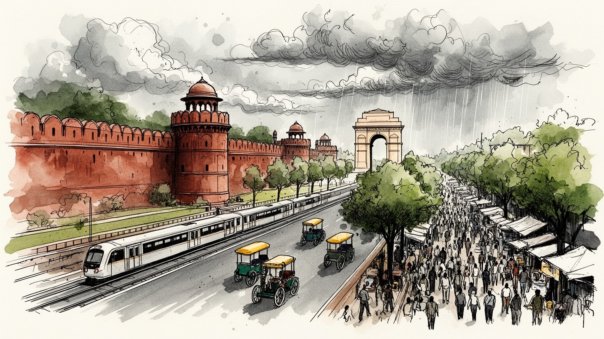
デリーはインドの首都で、国会、最高裁、中央官庁、大使館、軍と報道が集まります。北インド平原の結節点として国内統治と南アジア外交を担い、式典、抗議、治安、国境問題が街路に現れます。首都圏の重みです。
行政、教育、医療、小売、建設、観光、軽工業に加え、グルガオンとノイダのIT、金融、外包サービスが雇用を作ります。清掃、配達、家事、露店、建設、運転の労働が都市を支え、所得差も大きいです。日々変わります。
ヒンドゥー教、イスラム、シク教、ジャイナ教、キリスト教が近くにあり、寺院、モスク、グルドワラ、市場、祭礼が日々刻みます。ムガルの記憶、分離独立後の移住、大学文化、映画と食が重なります。暮らしに根づきます。
観光客はレッドフォート、ジャーマー・マスジド、クトゥブ・ミナール、インド門、市場を巡りますが、住民には通勤、家賃、水、暑さ、大気、治安、子どもの通学が毎日の条件です。路地の暮らしも観光の周囲で息づきます。
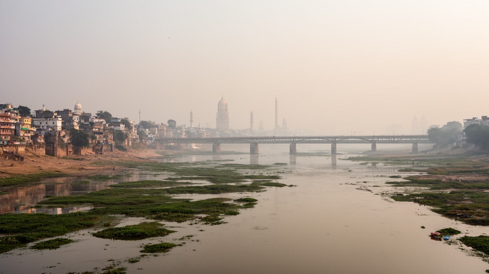
デリーの地理は、ヤムナー川とアラヴァリ山系の低い尾根、北インド平原の乾いた広がりから始まります。川は旧都城の東を流れ、農地、氾濫原、湿地、橋、宗教儀礼、下水、再開発の問題を一つに結びます。西側にはラール・キラー周辺の旧市街、ニューデリーの行政軸、南部の住宅地、大学、商業地が伸び、郊外ではグルガオン、ノイダ、ガーズィヤーバード、ファリーダーバードが都市圏を押し広げます。橋を渡る人は、官庁街へ向かう職員、大学へ急ぐ学生、屋台の商品を運ぶ人、学校帰りの子ども、病院へ行く高齢者までさまざまです。乾いた熱風、モンスーン前の土の匂い、冬のスモッグで鈍る朝日、車の警笛と祈りの音は、地形と都市化が重なることで強く感じられます。ヤムナーの水辺を読むと、デリーが川を抱く都市でありながら、川を汚し、囲い込み、公共空間として取り戻そうとする矛盾を持つことが分かります。堤防の外に暮らす人、橋の下で働く人、祝祭で水に触れる人の経験を含めると、川は行政図の線ではなく、不平等と記憶を映す場所になります。洪水期の避難、乾季の悪臭、橋上の渋滞、尾根の緑地で夕方に運動する人びとも、地理が生活条件そのものだと教えます。夕方には公園でクリケットの球音が響き、夏は舗装から熱が返り、露店の氷水にも列ができます。市場の匂いも風に混ざります。
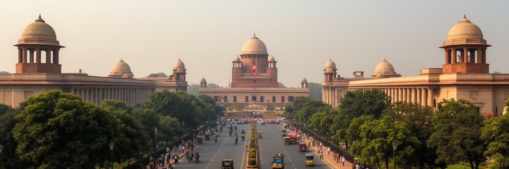
デリーはインド共和国の政治中枢であり、中央政府、国会、最高裁、大統領府、首相府、各省庁、大使館、軍、報道機関が集中します。ニューデリーの行政地区は、広い道路、緑地、記念碑、官庁街によって権力を見せる空間として作られましたが、現在は民主政治、抗議、選挙、外交、式典、警備の舞台でもあります。共和国記念日の行進、外国首脳の訪問、農民や学生の抗議、司法判断、政策発表は、テレビ討論、新聞、スマートフォンの速報だけでなく、道路封鎖、地下鉄駅、広場、警察の配置として住民の生活に届きます。首都であることは雇用と投資を呼びますが、政治の緊張も街路へ運びます。地方から来る政治家、官僚、請願者、記者、活動家、労働組合、宗教指導者は、ホテル、食堂、会議場、記者会見場を使いながら国家の意思決定に関わります。夕方のニュース番組の音、屋台で交わされる政策への不満、大学キャンパスの討論も首都らしい響きです。デリーを読むには、ルティエンスの都市計画の美しさだけでなく、権力がどのように移動を止め、声を集め、時に排除するかを見る必要があります。州政府との権限関係や首都圏自治の問題も、行政サービスと政治責任を複雑にします。政治首都の重みは、壮麗な建物の背後で、清掃員、警備員、運転手、翻訳者、下級職員が毎日制度を動かしている点にもあります。
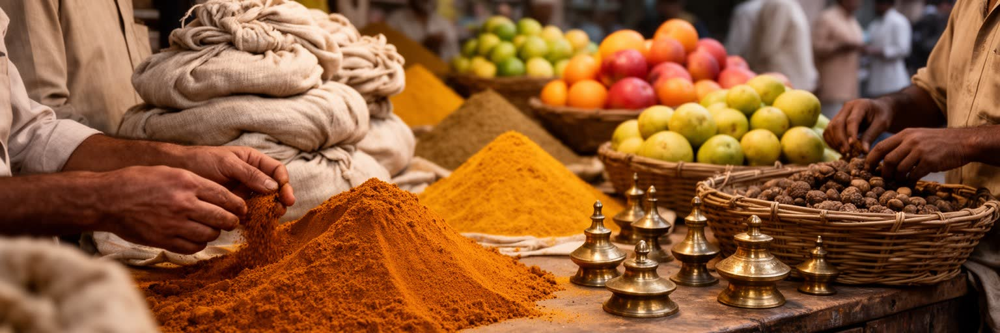
旧デリーの市場は、ムガル時代の都城シャージャハーナーバードの記憶を残しながら、都市経済の濃い現場として動いています。チャンドニー・チョーク周辺には香辛料、布、宝飾、金物、電子部品、書籍、菓子、婚礼用品、日用品が密集し、狭い路地を人力車、バイク、荷車、歩行者が共有します。唐辛子と揚げ油の匂い、クラクション、値段交渉、モスクからの呼びかけ、布をほどく音が重なり、買い物は視覚だけでなく体で受け止める経験になります。観光客には混沌として見える場所も、商人にとっては信用、仕入れ、家族経営、宗教共同体、地域ごとの専門性が積み重なった精密な経済です。早朝の搬入、倉庫の荷下ろし、食堂の仕込み、修理、会計、配達、露店、清掃が、店先の賑わいを支えます。婚礼期には衣装や宝飾の買い物が増え、祝祭前には菓子、灯り、贈り物が路地を埋めます。メトロや再整備はアクセスを改善しましたが、立ち退き、渋滞、火災、衛生、保存、家賃上昇の問題も強めます。旧市街を遺産としてだけ扱うと、働く人の速度と家計が見えません。市場を歩くことは、歴史的景観と低賃金労働、家族商店、卸売網、オンライン販売との競争が同じ路地で絡み合う姿を読むことです。値札も物語ります。デリーの商業力は高層ビルだけでなく、この古い市場の反復にも支えられています。
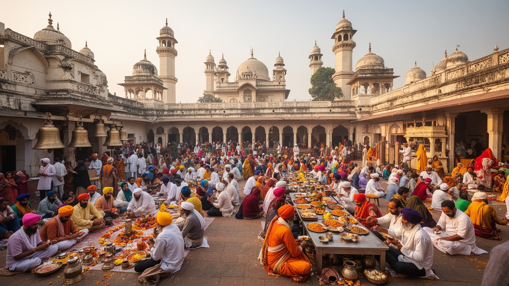
デリーの宗教生活は、巨大寺院や歴史的モスクだけでなく、路地の祠、グルドワラの食事、ジャイナ寺院、教会、霊廟、墓地、家庭の祭壇に広がります。ジャーマー・マスジドの金曜礼拝、ニザームッディーン廟の祈り、アクシャルダムの参拝、シク教のランガル、ディーワーリー、イード、グルプラブ、ホーリーは、都市の時間と人の流れを変えます。祝祭の日には菓子の甘い匂い、花輪、太鼓、祈り、爆竹、渋滞、警備、家族訪問が一斉に増え、子どもは新しい服や灯りを楽しみ、高齢者は親族の訪問と休息の場所を大切にします。信仰は観光の対象である前に、食事、慈善、葬送、結婚、商売の縁起、地域の連絡を支える生活の制度です。同時に、宗教の近さは緊張も伴います。分離独立の記憶、共同体間暴力、政治的な動員、警備、噂は、日常の信頼を揺らすことがあります。だからデリーの宗教を読むには、壮麗な建築だけでなく、誰が安全に行けるのか、食の規則や礼拝時間が仕事や学校とどう調整されるのかを見る必要があります。祈りの場所は貧しい人への食事、旅人の休息、移民の相談の場にもなります。市場の隣で祈りが続くため、商いと信仰の境界は柔らかく変化します。夜には音楽的な祈りも響き、広場も明るくなります。音、香り、行列の記憶は住民の暦を作り、巨大都市で人を結び直す力にもなります。
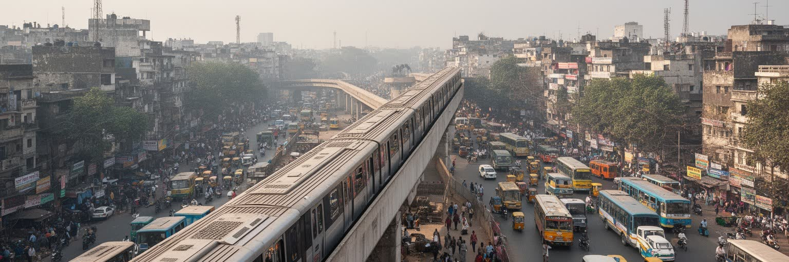
デリー・メトロは、首都圏の読み方を大きく変えました。旧市街、ニューデリー、南部の住宅地、大学、空港、ノイダ、グルガオン方面を結び、長い通勤を比較的読みやすい路線図へ変換しています。女性専用車両、駅の検査、カード決済、乗り換え通路、駅前のオートリキシャ、歩道橋は、デリーの日常的な移動を形づくります。朝の車内には学生、官庁職員、看護師、買い物袋を抱えた家族が詰めかけ、夕方にはクリケットの試合や映画、コンサート帰りの若者も混ざります。メトロは渋滞と大気汚染を減らす期待を担いますが、駅から先の歩行環境、バス接続、夜の安全、障害者の利用、運賃負担が整わなければ、すべての人に同じ便利さは届きません。富裕層は車や配車アプリを使い、低所得者はバス、徒歩、自転車、人力車、相乗りに頼ることも多く、移動手段は階層を映します。駅前の乗り換え空間には、物売り、警備、乗客の列、配車待ち、家族の迎え、茶を売る人が集まり、都市の縮図が現れます。都市の広がりが大きいほど、通勤時間は賃金、家族の食事、睡眠、子育て、高齢者の通院に影響します。バス停の暑さも判断を大きく変えます。女性の安全や夜間移動への不安も、交通の評価を左右する重要な条件です。メトロを読むことは、誰が中心へ届き、誰が駅の外で取り残されるのかを見ることです。
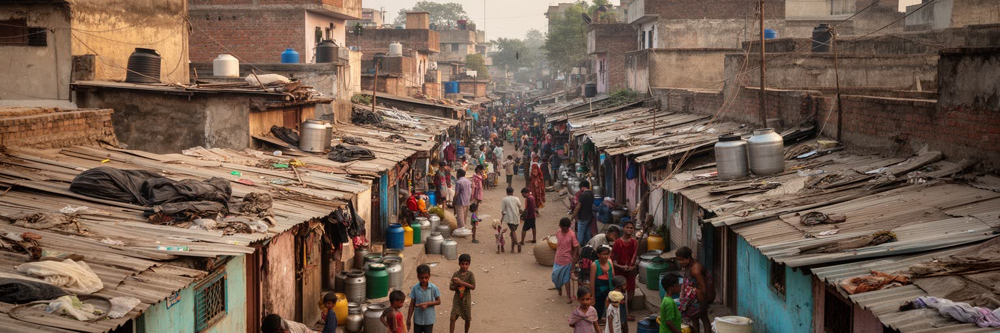
デリーの住宅問題は、首都の豊かさと不平等を最も強く映します。政府地区の広い官舎、南デリーの高級住宅、郊外の高層集合住宅、旧市街の密集住宅、再定住コロニー、無認可コロニー、スラム、建設現場の仮設住まいが同じ都市圏に並びます。地方から来た労働者にとって、住まいは仕事に近いか、家賃を払えるか、水やトイレが使えるか、警察や大家との関係が安全かという具体的な問題です。家事労働者、警備員、配達員、露店商、建設労働者、清掃員は都市を支えますが、彼らが住む場所は都市計画の外側に置かれやすく、立ち退きやサービス不足にさらされます。朝には子どもが制服で学校へ向かい、高齢者は日陰のある公園や寺院の前で休み、若者は屋上で洗濯物を干しながら仕事の連絡を待ちます。再開発や道路整備は美しい景観と交通改善を生む一方、仕事場に近い低家賃住宅を消すことがあります。非公式な住宅地は単なる欠陥ではなく、都市が安い労働に依存しながら十分な住居を用意してこなかった結果です。住民は水を運び、電気を分け合い、学校や診療所への道を作り、近隣の助け合いで暮らしを保ちます。暑さや洪水、火災は狭い住まいほど深刻で、災害時の避難や医療情報にも差が出ます。住所が不安定なら、投票や支援の手続きも難しくなります。住宅を読むと、都市を支える人が尊厳を保って住めるかが成長の尺度だと分かります。
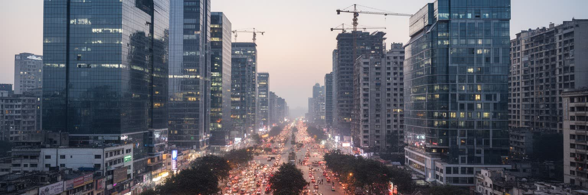
現代のデリー経済は、ニューデリーの行政機能だけでなく、グルガオンとノイダを含む首都圏で理解する必要があります。グルガオンにはITサービス、外資系企業、金融、コールセンター、ホテル、ショッピングモール、高層オフィスが集まり、ノイダにはIT、メディア、教育、住宅開発、産業団地が広がります。テレビ局、制作会社、ニュースサイト、広告会社も集まり、政治ニュースから映画、スポーツ中継までを全国へ送り出します。これらの衛星都市は、空港、高速道路、メトロ、民間開発によって急成長し、若い専門職を引き寄せました。一方で、ガラスのオフィスの足元には、警備、清掃、調理、運転、宅配、家事労働、建設の仕事があり、給与、住まい、交通手段には大きな差があります。民間開発の地区では、オフィス、ゲート付き住宅、モールが整う一方、歩道、公共空間、下水、バス、低所得者住宅が不足しやすいこともあります。外包サービスは世界の企業活動とデリーの夜勤を結び、時差に合わせて働く人の生活リズムを変えます。英語教育、技術研修、大学からの就職希望はこの経済を支えますが、契約の不安定さや長時間通勤も広がります。仕事帰りのモール、深夜の配車待ち、企業バスの列も新しい都市風景です。官庁街と旧市街だけでなく、周辺業務地が作る労働と生活の分断を見る必要があります。
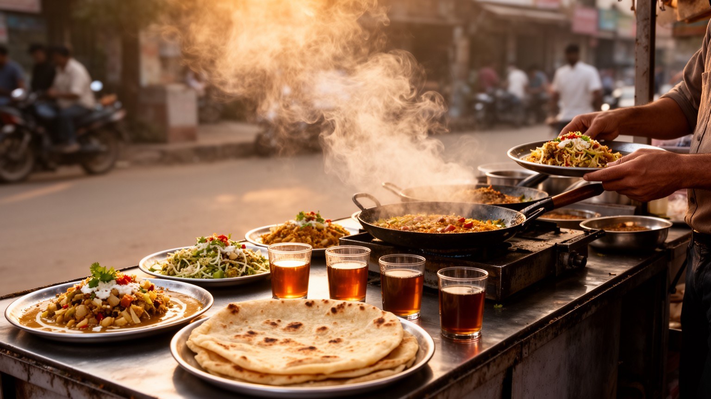
デリーの日常は、食の多様さに表れます。旧市街のケバブやビリヤニ、パラーターの店、パンジャーブ系の食堂、チャート、サモサ、南インド料理、ベジタリアン食、屋台の茶、大学近くの安い食堂、モールの国際チェーンが、移住と階層の地図を作ります。揚げた生地の匂い、炭火の煙、ライムと香辛料、夏の甘いラッシー、冬の熱いチャイは、通りを歩く記憶に残ります。分離独立後に移ってきた人びとの味、ムガル料理の記憶、宗教上の食の規則、学生や単身者の外食、家庭の弁当が同じ都市で共存します。食は観光の楽しみであると同時に、働く人の昼食、家族の祝宴、宗教行事、家計の圧力でもあります。物価上昇や家賃、燃料費は食堂の価格に響き、屋台や小店は衛生規制、立ち退き、警察との関係に左右されます。水の安全、暑さ、保存設備、混雑した道路での配送も、食文化の背後にある現実です。夕方の市場や駅前では、帰宅する人の空腹、家族への土産、学生の会話、クリケット中継を聞く店員の声が混ざり、都市の疲れと活気が同時に見えます。断食明けの食事や婚礼の宴も、親族と共同体を結び直します。夜の屋台街では音楽と笑い声が食欲をもう一度呼び起こします。味の豊かさは、都市へ来た人びとが記憶を持ち込み、限られた収入と時間の中で食を組み立てる力から生まれます。余韻です。
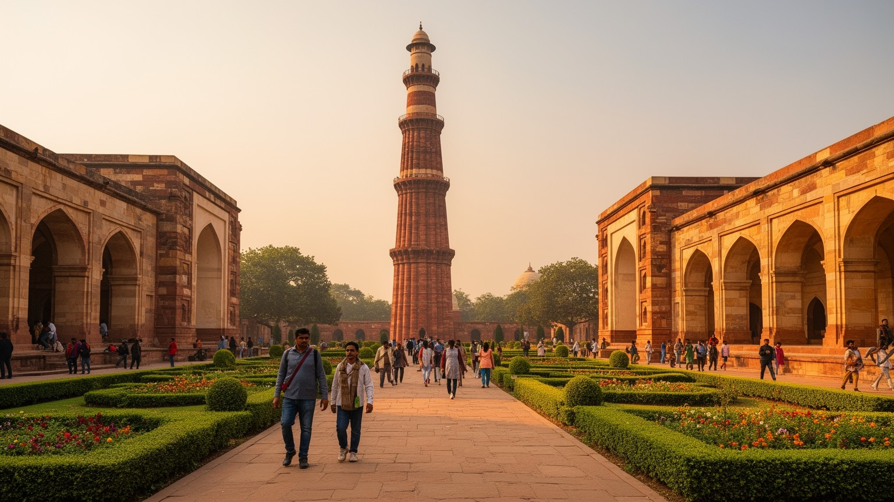
デリー観光は、複数の時代を短い移動でたどれる点に力があります。レッドフォートとジャーマー・マスジドはムガルの都を想起させ、クトゥブ・ミナールはデリー・スルタン朝の記憶を残し、フマユーン廟は庭園墓の美しさと帝国の系譜を伝えます。インド門、大統領府、国会地区は植民地都市計画と共和国の儀礼を重ね、博物館や記念施設は独立後の国家像を示します。観光客は名所を巡りますが、その移動の周囲には露店、ガイド、清掃、警備、交通整理、修復職人、土産物店、写真業者が働いています。日中の暑さを避けて朝に歩く人、木陰で休む高齢者、芝生で遊ぶ子ども、夜にライトアップや音楽を楽しむ若者もいます。遺産は保存される建物であると同時に、収入源であり、政治的な記憶をめぐる舞台でもあります。混雑、入場料、金属探知、周辺の立ち退き、修復工事、宗教利用、観光客の服装や行動は、遺産の使われ方を変えます。世界遺産や記念碑は都市を国際的に見せますが、その足元には市場、学校、祈り、渋滞、家計があります。観光ルートから少し外れると、修理を待つ家、通学路、昼食の店、スポーツをする公園、夕方の買い物があり、遺産地区が生活空間でもあることが分かります。土産物の手触りも旅の記憶になります。観光の価値は、過去の威光と現在の暮らしを同時に尊重できるかで決まります。
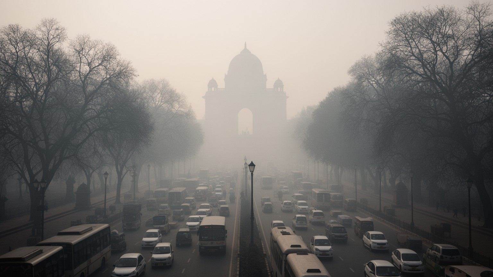
デリーの環境リスクは、大気汚染、酷暑、水、廃棄物が重なって現れます。冬には霧、車両排出、建設粉じん、工業活動、周辺農地の焼却、気象条件が重なり、視界と呼吸を悪化させます。朝のスモッグは喉に残り、遠くの建物を薄く隠し、学校の運動や公園の散歩をためらわせます。夏の熱波は屋外労働者、露店商、警備員、配達員、建設労働者、高齢者、子どもに強い負担をかけ、冷房を使える人と使えない人の差を広げます。モンスーンの豪雨は浸水や交通麻痺を起こし、乾季には水不足と地下水利用の問題が目立ちます。ヤムナー川の汚染、下水処理、廃棄物管理、緑地の減少は、生活の健康に直結します。環境問題は抽象的な政策ではなく、学校の休校、病院の混雑、労働時間の変更、家計の電気代、飲み水の確保として住民に届きます。富裕層は空気清浄機、車、冷房、私有水源で身を守れますが、低所得者ほど汚染された空気と暑さに直接さらされます。公園、街路樹、涼しい公共施設、清潔なバス停、粉じんを抑える建設管理は、健康政策でもあります。早朝にクリケットやカバディをする人びとにとっても、空気と暑さは競技以前の条件です。昼の道路は熱を返し、夜も壁に暑さが残ります。気候への適応は、木陰、公共交通、涼める場所、安全な水、労働者の休息を都市政策の中心に置くことから始まります。
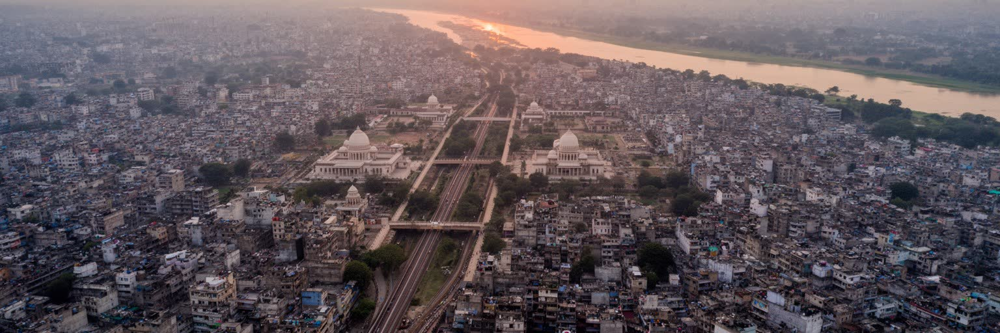
デリーを世界都市として読む理由は、人口とGDPだけではありません。ヤムナー川の地理、ムガルとスルタン朝の遺産、植民地首都の軸線、共和国の政治中枢、旧市街の市場、宗教儀礼、メトロ、非公式住宅、衛星都市のIT産業、大気汚染と酷暑が、一つの首都圏で互いに結びついています。官庁街の広い道路と旧市街の狭い路地、グルガオンの高層オフィスと建設労働者の仮住まい、世界遺産の庭園と汚れた川、祝祭の光と冬のスモッグを一緒に見ると、都市の力と負担が同時に見えます。ここでは国会討論、テレビニュース、大学の議論、市場の値切り、映画音楽、夜のカフェ、モールの買い物、路上の修理、クリケットの歓声、カバディの掛け声が同じ首都圏の音になります。デリーはインドの意思決定を世界へ発信する都市であり、地方から来た人が仕事を探し、家族を支え、信仰を守り、暑さと大気の中で暮らす都市でもあります。世界都市としての厚みは、公式の首都イメージだけでなく、毎日の市場、駅、台所、祈り、労働、環境リスクを読めるかにかかっています。そこには成長の誇りだけでなく、誰が水を得て、誰が遠くから通い、誰が汚れた空気を吸うのかという問いがあります。デリーを理解することは、急成長する南アジアの都市が、栄光と不平等をどう同時に抱えるかを見ることです。そこに魅力があります。